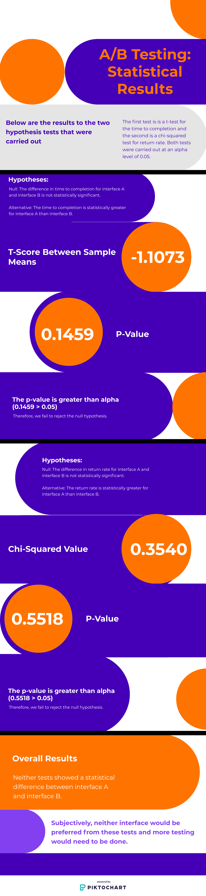

A/B Testing: Online Cactus Store
Can you objectively say that a certain interface choice is better than another?
It would be near impossible to objectively come up with definitive measures to determine if an arbitrary
interface choice is better than another. However, one thing that we can consistently do is examine overall user interactions
with webpages to make quantitative statements. Specifically, we can use user statistics and testing to determine
the effectiveness of a particular interface choice compared to another.
To examine this, I made two similar versions of an Online Cactus Store interface with a few distinct changes
(reference the image linked to the webpages above; refresh that page to view the other interface). Namely,
the main difference is the spacing and the borders around the cacti and cart functionality with interface
B adding more spacing and borders.
I collected data on a sample of users using these interfaces, and, ultimately,
I will use statistical tests on the user indicators of return rate and
time to completion to determine if there is a statistically significant difference for
aspects of user experience between webpages A and B.
Hypotheses
Time to Completion
Null Hypothesis:
The difference in time to completion for interface A and interface B is not statistically significant.
Alternative Hypothesis:
The time to completion is statistically greater for interface A than interface B.
Reasoning:
I selected this Alternative Hypothesis because I believed the defined borders and more friendly spacing in interface B
would allow users to more efficiently complete their task, which would overall reduce the time to completion
for interface B in comparison to interface A.
Return Rate
Null Hypothesis:
The difference in return rate for interface A and interface B is not statistically significant.
Alternative Hypothesis:
The return rate is statistically greater for interface A than interface B.
Reasoning:
I selected this Alternative Hypothesis because I believed the emphasis around the add to cart functionality with
border and spacing for interface B would allow users to be able to more efficiently track the amount of items added
to their cart, which would overall reduce the return rate for interface B in comparison to interface A.
Data Collection
Data was collected by having my classmates utilize one of the interfaces (interface A vs. B was
randomly assigned by the webpage). They were asked to add $150 worth of cacti to their cart
without further prompt.
I then collected the data which determined time to completion (the amount of time the user
spent on the task) and return rate (did the user return from the cart back to the interface)
per user. I cleaned this data to ensure that all accounted users at least made a good attempt
to complete the task, and then I performed the hypothesis tests (t-test for time to completion
and chi-squared for return rate).
Results and Broad Takeaways
Infographic

Takeaways
Limitations
Likely the main limitation that affected the result of my test is that there were only 23 users
whose data was utilized for the tests, which is a relatively small sample size. Additionally, users
may not have acted how true cacti shoppers would because they were only asked to add cacti
to their cart instead of purchasing the cacti that they want.
Design Choices
My tests do not really tell us much about the design difference between the two websites because
the results of both failed to reject the null hypothesis. However, if there truly no statistically
significant difference between the two interfaces (which is not a conclusion that I can make from
my tests), that would imply that the border and spacing does not effectively make a difference for
aspects of user experience when considering design choices.
Conclusion
From this Online Cactus Store example, we have seen how it is possible to quantitatively evaluate
the effectiveness of an interface for user interactions, but we have also seen in this very instance
that you may not be able to make a definitive conclusion depending on the data and confidence level.
At the end of the day, A/B testing is an essential evaluator for web interface choices, and it will
continue to be for the foreseeable future.